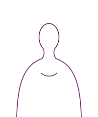
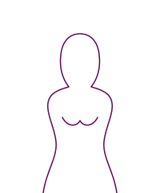
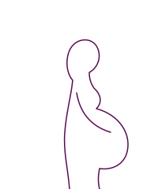
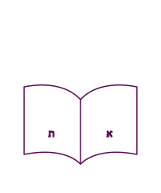

מערכת עיצוב
עמוד עזר למעצבת ולמפתח. כל הערכים מוגדרים ב-assets/css/tokens.css. הסבר מלא ב-docs/design-system.md.
צבעי מותג (מהאתר הקיים)
Plum 700#5A0954 · כותרות, פעולה ראשית
Plum logo#55004D · הלוגו
Orchid 500#AF63A8 · מוטו, הדגשות
Green 500#7EA403 · ירוק המותג, דקורטיבי
Grey 200#E5E6E7 · קווים
White#FFFFFF
הרחבת הפלטה
Plum 950#2A0427
Plum 800#4B0846 · hover
Orchid 300#DBB6D6
Lavender 200#ECDFEA
Lavender 50#FBF7FA · רקע אזור
Green 700#587400 · ירוק עם טקסט
Green 100#EEF3DC
Green 50#F6F8EE · רקע צור קשר
Ivory#FBF9F7 · רקע עמוד
Ink 900#251F28 · כותרות
Ink 700#3F3843 · גוף
Ink 500#6C6470 · משני
טיפוגרפיה
כותרות: IBM Plex Sans Hebrew (משקלים 300 / 400 / 500), מודרני ונקי. גוף וממשק: Assistant. שני הגופנים מאוחסנים מקומית.
--text-displayסיון נבות--text-3xlטיפולים נוספים--text-2xlאשמח לענות על שאלתך--text-xlצניחת איברי אגן--text-baseמאז שנת 2000 אני מטפלת בנשים ובגברים, מגיל הפריון ועד אחרי גיל המעבר.--text-smכפתורים, תוויות, ניווט--text-xsהערות, זכויות יוצריםכפתורים וקישורים
אייקונים
רשת 24×24, קו 1.5, קצוות ופינות מעוגלים, ללא מילוי, צבע לפי currentColor. מקור אחד: tools/icons.py (מייצר קבצי SVG בודדים ואת ה-sprite). בהקשרי תוכן האייקון יושב בתוך "קפסולה" – מוטיב התבליט מהאתר הישן.
איורים
שפה אחת של קו דק, אחיד ומעודן, עם זרעי סביון כמוטיב חוזר. דמויות קו לאריחי הקטגוריות (מיועדות גם לעמודי גברים / נשים / הריון ולידה / מילון).




ריווח (בסיס 4px)
--space-1 · 4
--space-2 · 8
--space-3 · 12
--space-4 · 16
--space-5 · 24
--space-6 · 32
--space-7 · 48
--space-8 · 64
--space-9 · 96
--space-10 · 128
פינות וצללים
sm · 10
md · 18
lg · 28
xl · 44
pill
shadow-1
shadow-2
shadow-3